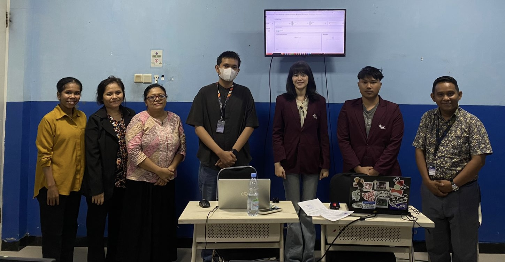

Development of Web-Based School Administration Application at SMPTK Budi Mulia Gresik
Year
March - July 2025
Role
System DeveloperMethodology
Database System Development Life Cycle (DSDLC)Project Description
Merancang dan mengimplementasikan aplikasi administrasi sekolah berbasis website di SMPTK Budi Mulia Gresik dengan pendekatan DSDLC. Proyek mencakup perencanaan, analisis kebutuhan, desain database, implementasi, serta pengujian (CRUD, Integration, Performance, dan UAT). UAT dilakukan langsung oleh pihak sekolah untuk memastikan kesesuaian kebutuhan. Hasil akhirnya adalah aplikasi terintegrasi yang mengelola data siswa, guru, staf, absensi, nilai, jadwal, perpustakaan, hingga keuangan, sehingga meningkatkan efisiensi operasional, mengurangi kesalahan, dan menyediakan informasi yang lebih akurat.
Tools & Skills
- Database Management System: MySQL (phpMyAdmin)
- Development Frameworks: Laravel, Bootstrap
- Development Methodology: Database System Development Life Cycle (DSDLC)
- Database Design: ERD, Normalisasi (1NF – 3NF), Relational Schema
- Testing: CRUD Testing, Integration Testing, Performance Testing, User Acceptance Testing (by school stakeholders)
- Skills: Web development, Database design & implementation, Data validation, System analysis, UI/UX optimization
Documentasi

